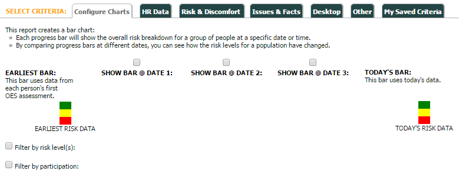
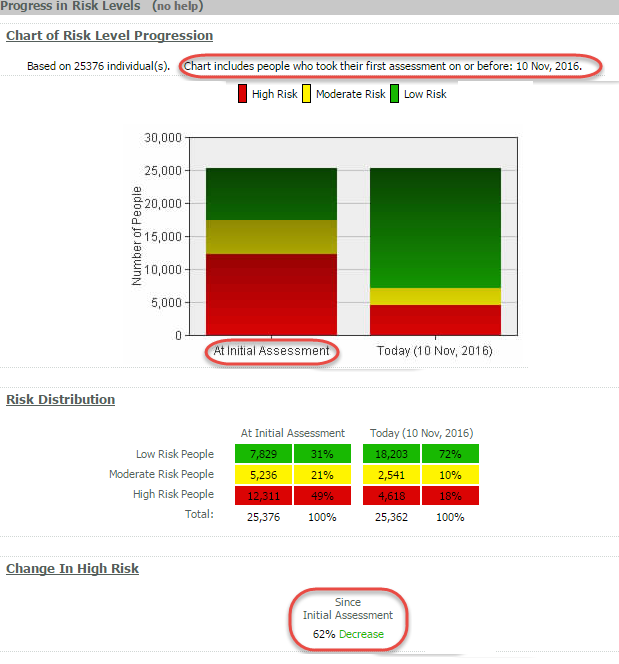
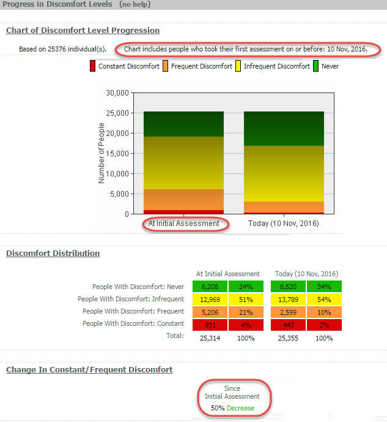

This example Progress Report shows overall progress from the time users took the initial assessment to today.
To configure this report do not use any dates in the criteria and do not use the "Filter by risk level(s)" and "Filter by participation" options. This is the default configuration when you select a Progress Report without previously configuring an Employee List Report. If you have previously run an Employee List Report you can de-select the dates and filter options.

The report will contain a bar for "At Initial Assessment" and a bar for the date the report is run.
The data shown in "At Initial Assessment" contains overall risk and discomfort information from the very first time a user completed the initial assessment. The data shown in "Today" contains Overall risk and discomfort data on the date the report is run.
Risk Distribution and Change in High (Overall) Risk are also included.
Progress in (Overall) Risk Levels:
Chart includes people who took their first assessment on or before: 10 Nov, 2016

Progress in Discomfort Levels:
